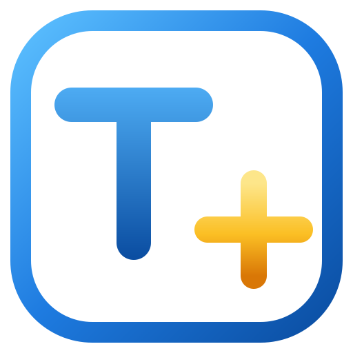
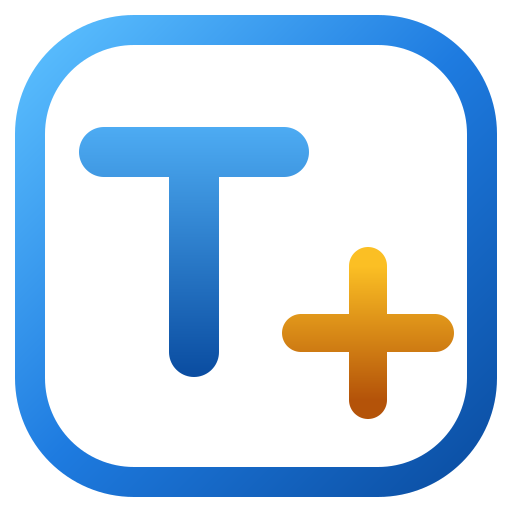
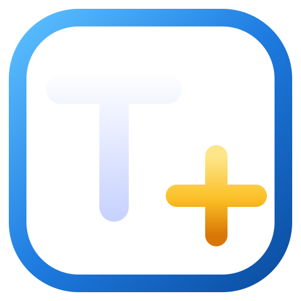
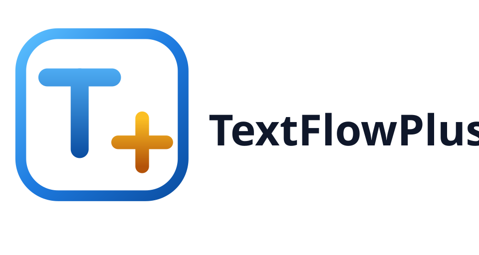
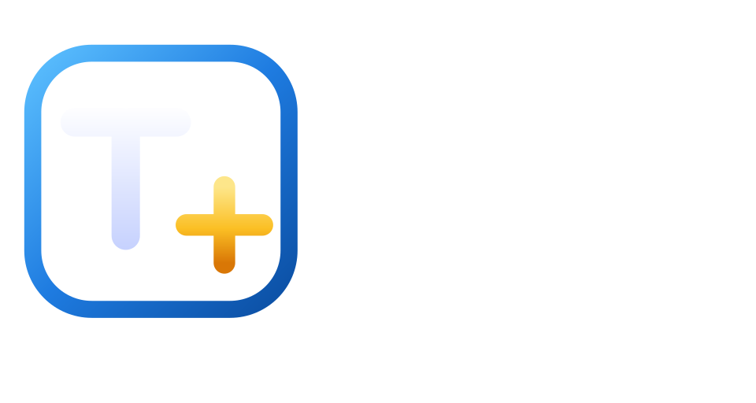
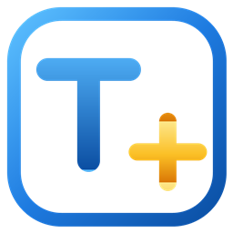

一个支持 Agent 的多功能编辑器的专属 Logo —— 蓝框内的 T+（透明底）

蓝描边方框（海蓝对角线渐变 #5CC0FF → #1E7BE0 → #0B4EA2）内放 T 与 +，二者分离不重叠；框内透明，可叠加任意底色；T 用亮海蓝→深海洋蓝渐变，+ 为琥珀色渐变；不叠加投影，小尺寸下依旧干净锐利。
AI 之峰：几何三角，棱角分明，代表智能与稳定。
编辑光标：唯一的强调色，一眼认出"编辑器"身份。
文本三行：文档与代码的抽象，向右敞开如流动的文字。
AI 火花：悬于光标之上，点明 Agent / 智能加持。





512 / 256 / 192 / 128 / 64 / 32 px 六档，小尺寸下仍清晰可辨（aie.ico 内嵌 256→16 六档）。
海蓝三色渐变构成描边方框（冷静深邃，象征可靠与流动）；框内透明不占底色；琥珀色的 + 是全图唯一暖色强调。
icon.svg / icon-*.png 应用图标mark-color.svg / png 标识（浅色背景）mark-white.svg / png 标识（深色背景）lockup-light|dark.svg / png / @2x.png 标识+字标aie.ico Windows / 浏览器多尺寸图标render-logo.ps1 一键重新渲染全部位图
• 两笔零装饰、粗圆角几何，32px 小图标下依旧可辨；
• "T+"——Text 与 Plus 的直接表达，字母即产品定位；
• 纵向明→暗渐变与投影模拟顶光，让标识"立"起来，与市面上扁平的 AI 图标区分；
• 蓝框界定出"编辑画布"，T 与 + 完全分离、互不重叠，两个符号各自完整；
• 琥珀色的 + 是全图唯一强调色，色彩记忆点集中在"海蓝 + 琥珀"。